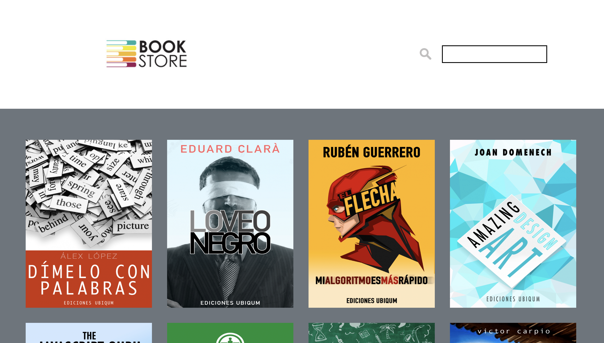

Tic Tac Toe is a paper-and-pencil game for two players, X and O, who take turns marking the spaces in a 3×3 grid.
The player who succeeds in placing three of their marks in a horizontal, vertical, or diagonal row wins the game.
I made this game to practice my JS skills.
Technologies: HTML5, CSS3, JS

A friend working as an english tutor wants to attract more clients by having a website.
A one-page-design served our needs perfectly since the content is so little.
I was able to realize my own ideas for design and content since there were no requirements from my friend,
besides including the services that she offers.
Technologies: HTML5, CSS3, JS, JQuery, Vue.js
Mobile SPA for soccer club


This Single Page Application built with Firebase and
the Vue CLI has user authentication and a chat in real time.
I did a more simple version during my time at coding bootcamp.
It was part of the curriculum.
Recently i have rebuild it.
I took advantage of Vuetify's beautiful material design
and Vuex - Vue's state management pattern - to make the app not
only look, but also feel good to use.
The client is a soccer club that wants to have an app, in order for their members to be able to communicate with
each other, see upcoming matches and have access to this information from their phones.
Using the chat requires the user to be logged in. All other pages can be accessed as a guest. Feel free to signup
and test out the chat. Tip: After opening it in chrome just switch the device mode to a mobile device of your
choice. I did not test the site for other browsers, so please use Chrome.
Technologies: Vue CLI, Vuetify, Vuex, Firebase
Find a psychotherapist nearby

This is a website i made for my mum, who runs her own practice as a psychotherapist.
There are two versions of this site.
The advanced version includes a page, where users can search for therapists and a page with
a contact form built with a third party service called Email.js.
On the page where users can search for therapists
they have the possibility (although it is not required) to enter their address and search for therapists, who are
nearby.
This is made possible through the use of The Google Maps Distance Matrix API.
Users can also set filters for the type of therapy they want and therefore customize the results to their needs.
Since my mum currently does not want either functionality on her page, you will not find these on there.
However, for the purpose of showcasing my work,
you can check out the more advanced version here. Please use Chrome for that.
Technologies: Nuxt.js, Vuetify, Google Maps Distance Matrix API

This page could be the frontend of a simple bookstore. It is one of my earliest projects.
Users can search for book titles and can flip the front cover to receive more information about the book.
There is also a button on the back that opens a slide-show. The site is fully responsive. It is built with Vue.js
and Bootstrap.
Please use Chrome or Firefox to open this page. It currently does not work with Safari.
Technologies: Vue.js, Bootstrap

TGIF stands for Transparency in American Government.
The goal of the site is to make aggregated data about American Congressmen and Senators available to the public.
While the design is simple, the site offers valuable information through the use of filters and statistics
presented in tables.
There are two versions of this on my github.
One done with Vanilla Javascript and the other one with the help of Vue.js.
The site is fully responsive.
Technologies: Vanilla JS/Vue.js, Bootstrap